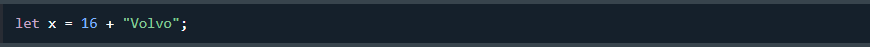
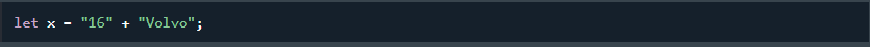

O tipo de dados do objeto pode conter:
Uma variável JavaScript pode conter qualquer tipo de dados.
Na programação, os tipos de dados são um conceito importante.
Para poder operar com variáveis, é importante saber algo sobre o tipo.
Sem tipos de dados, um computador não pode resolver isso com segurança:
Faz algum sentido adicionar “Volvo” aos dezesseis? Produzirá um erro ou produzirá um resultado?
JavaScript tratará o exemplo acima como:
Ao adicionar um número e uma string, o JavaScript tratará o número como uma string.
Ao adicionar um número e uma cadeia de caracteres, o JavaScript tratará o número como uma cadeia de caracteres.
Ao adicionar uma cadeia de caracteres e um número, o JavaScript tratará o número como uma cadeia de caracteres.
JavaScript avalia expressões da esquerda para a direita. Sequências diferentes podem produzir resultados diferentes:
O JavaScript avalia as expressões da esquerda para a direita. Sequências diferentes podem produzir resultados diferentes:
O JavaScript avalia as expressões da esquerda para a direita. Sequências diferentes podem produzir resultados diferentes:
No primeiro exemplo, o JavaScript trata 16 e 4 como números, até chegar a “Volvo”.
No segundo exemplo, como o primeiro operando é uma string, todos os operandos são tratados como strings.
JavaScript possui tipos dinâmicos. Isso significa que a mesma variável pode ser usada para armazenar diferentes tipos de dados:
O JavaScript tem tipos dinâmicos. Isto significa que a mesma variável pode ser utilizada para conter diferentes tipos de dados:
Uma string (ou string de texto) é uma série de caracteres como "John Doe".
Strings são escritas entre aspas. Você pode usar aspas simples ou duplas:
As cadeias de caracteres são escritas com aspas. Pode utilizar aspas simples ou duplas:
Você pode usar aspas dentro de uma string, desde que elas não correspondam às aspas ao redor da string:
Pode utilizar aspas dentro de uma cadeia, desde que não coincidam com as aspas que rodeiam a cadeia:
Todos os números JavaScript são armazenados como números decimais (ponto flutuante).
Os números podem ser escritos com ou sem decimais:
Os números podem ser escritos com ou sem decimais:
Números extragrandes ou extrapequenos podem ser escritos com notação científica (exponencial):
Números muito grandes ou muito pequenos podem ser escritos com notação científica (exponencial):
A maioria das linguagens de programação possui muitos tipos de números:
Números inteiros (inteiros): byte (8 bits), curto (16 bits), int (32 bits), longo (64 bits)
Números reais (ponto flutuante): float (32 bits), double (64 bits).
Os números Javascript são sempre de um tipo: double (ponto flutuante de 64 bits).
Todos os números JavaScript são armazenados em formato de ponto flutuante de 64 bits.
JavaScript BigInt é um novo tipo de dados ( ES2020 ) que pode ser usado para armazenar valores inteiros grandes demais para serem representados por um número JavaScript normal.
Um BigInt não pode ter casas decimais.
Não é possível efetuar cálculos matemáticos entre um tipo BigInt e um tipo Number.
Booleanos só podem ter dois valores: true ou false.
Os booleanos podem ter dois valores: verdadeiro ou falso:
Booleanos são frequentemente usados em testes condicionais.
Matrizes JavaScript são escritas entre colchetes.
Os itens da matriz são separados por vírgulas.
O código a seguir declara (cria) um array chamado cars, contendo três itens (nomes de carros):
Os índices de matriz são baseados em zero, o que significa que o primeiro item é [0].
Os índices de array são baseados em zero, o que significa que o primeiro item é [0], o segundo é [1] e assim por diante.
Objetos JavaScript são escritos com chaves {}.
As propriedades do objeto são escritas como pares nome:valor, separados por vírgulas.
O objeto (pessoa) no exemplo acima possui 4 propriedades: firstName, lastName, age e eyeColor.
Você pode usar o operador JavaScript typeofpara encontrar o tipo de uma variável JavaScript.
O typeofoperador retorna o tipo de uma variável ou expressão:
O operador typeof devolve o tipo de uma variável ou de uma expressão.
O operador typeof devolve o tipo de uma variável ou de uma expressão.
Em JavaScript, uma variável sem valor tem o valor undefined. O tipo também é undefined.
O valor (e o tipo de dados) de uma variável sem valor é indefinido.
Qualquer variável pode ser esvaziada, definindo o valor como undefined. O tipo também será undefined.
As variáveis podem ser esvaziadas se o valor for definido como indefinido
Um valor vazio não tem nada a ver com undefined.
Uma string vazia possui um valor legal e um tipo.
Uma cadeia vazia tem um valor legal e um tipo: